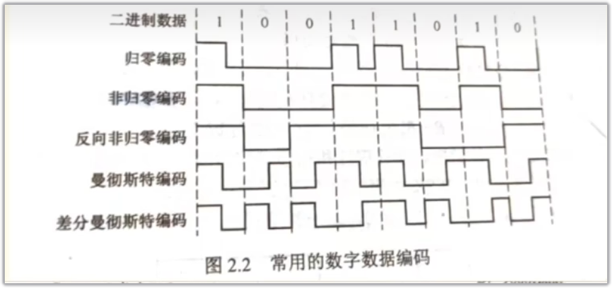
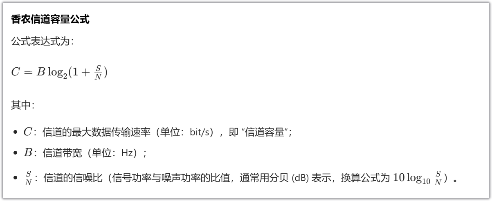
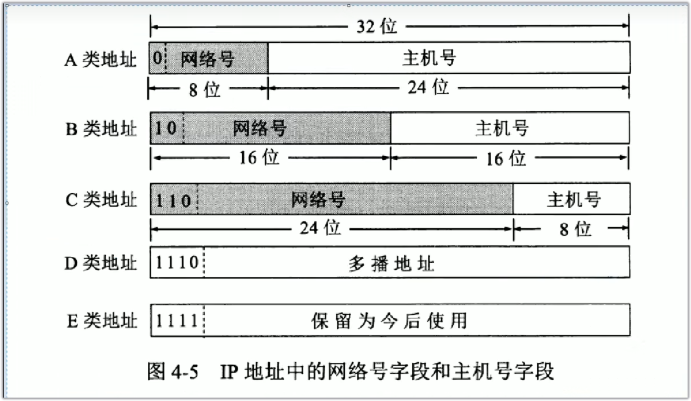
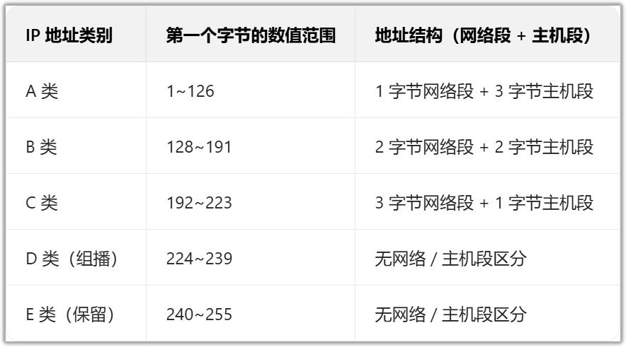
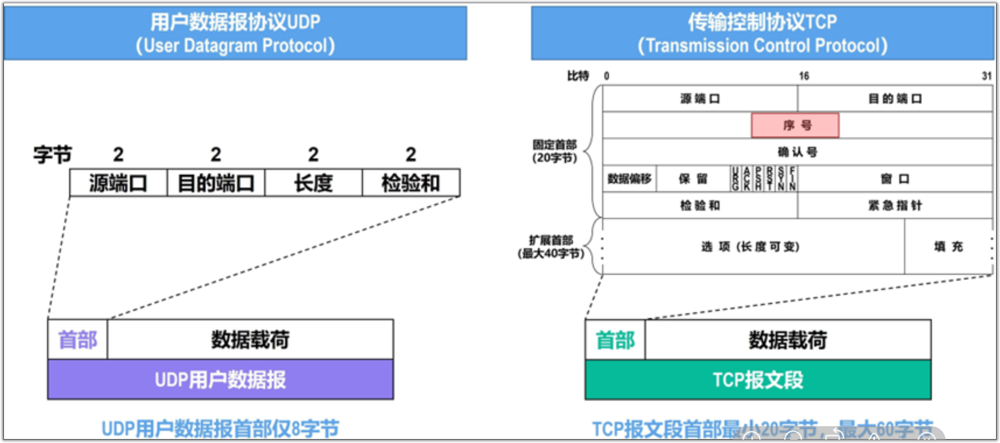
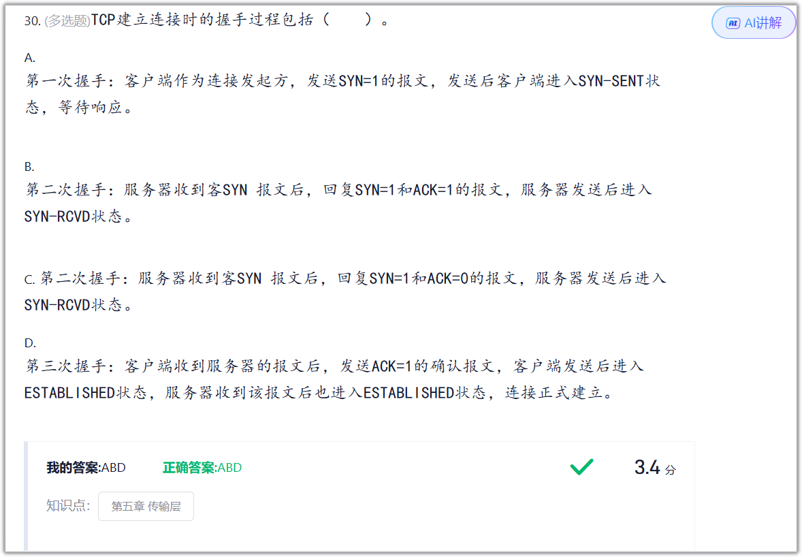
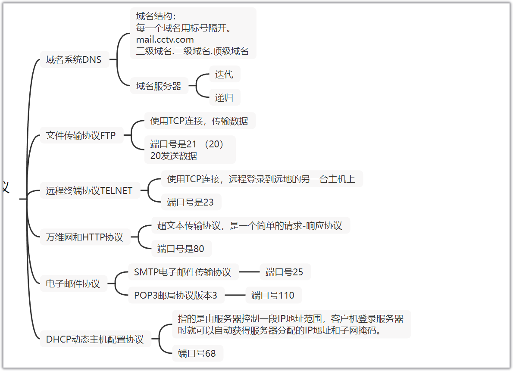

一、计算机网络概念与结构
定义：独立的计算机通过通道线路连接从而共享资源的计算机系统
组成：资源子网和通信子网
分类：1.按照拓扑 2.按照范围 3.按照传输方式
拓扑 ：1.星型 2.网状型 3.树形 4.总线型 5.环型
范围： 1.局域网（LAN）2.城域网（MAN）3.广域网（WAN）
传输： 无线和有线网络
1.波特率
- 核心定义：单位时间内传输的信号码元个数（码元是承载数字信号的基本波形单元），单位是 “波特（Baud）”。
- 注意：波特率≠比特率（比特率是每秒传输的二进制位数），只有当每个码元携带 1 个比特时，两者数值才相等。
2. 比特率
- 核心定义：单位时间内传输的二进制数据位数，单位是 “比特 / 秒（bit/s）”，常用 Kbit/s、Mbit/s 等。
- 和波特率的关系：比特率 = 波特率 × 每个码元携带的比特数（比如一个码元表示 2 位二进制，波特率 1000Baud 对应比特率 2000bit/s）。
3. 信道带宽
- 核心定义：信道能传输的信号的最高频率与最低频率的差值（单位是 “赫兹（Hz）”），也常用来指代 “信道的最大数据传输速率”（此时单位是 bit/s）。
- 通俗理解：类比 “水管的粗细”—— 带宽越大，信道能同时传输的信号越多，理论上传输速度越快。
4. 吞吐量
- 核心定义：实际传输过程中，单位时间内成功送达的数据量，单位通常是 bit/s 或 Byte/s。
- 通俗理解：相当于 “实际能用上的传输速度”（比如宽带标称 100M，但实际下载时吞吐量可能只有 50Mbit/s，因为会受网络拥堵、干扰等影响）。
- 区别于带宽：带宽是 “理论最大能力”，吞吐量是 “实际传输效果”。
时延、时延带宽积、速率（比特率）、利用率（网络利用率和信道利用率）往返时间、吞吐量、带宽
网络结构—
数据传输方式
分为按照方向和按照对象划分
按照方向： 1.单双工 2.半双工 3.全双工
按照对象： 1.单播 2. 多播 3.广播
数据交换方式
- 电路交换 需要互相连接 独占资源、实时性高、无差错控制。
- 报文交换 无连接 但需要交换机将整个报文下载下来
- 分组交换 这是报文交换的优化 将报文进行分组传输
分组交换又分为数据报方式和虚电路方式两种形式
虚电路交换是进行逻辑连接的。其实就是一些交换的规则（并不是独占信道）
通信协议和体系结构
协议三要素
1.语法 2.语义 3.同步
语法：语法定义了数据在网络传输中的格式和编码方式
语义：语义定义了数据的意义和操作规则
时序：时序定义了数据传输和处理的时间规则
OSI模型（重点）
1.物理层
2.数据链路层
3.网络层
4.传输层
5.会话层
6.表示层
7.应用层
TCP/IP模型
1.网络接口层（物理层和数据链路层）
2.网络层
3.传输层
4.应用层
计算机网络的工作模式可分为对等网工作模式（P2P）和 客户端和服务器工作方式(C/S模式)。
HFC；ADSL
二、物理层
概念
四大特性（重点）
- 机械特性 使用什么接口
- 电气特性 传输什么型号，使用多少伏的电
- 功能特性 作用
- 过程特性 不同的效果
两种信号
数字信号和模拟信号
调制和编码
调制：数字信号转模拟信号 三种方式 调频 调幅 调相
编码：将数据转换成数字信号

曼切斯特编码：（自同步能力）
0 = 低到高，1 = 高到低
差分曼切斯特编码：
0不变，1变
传输介质
- 双绞线
- 屏蔽双绞线 （抗干扰更好）
- 非屏蔽双绞线
- 交叉线 （两个计算机联通）
一般情况下计算机与交换机相连采用的是（直通线 / 标准线），计算机与路由器相连采用（交叉线）。
- 光纤
- 单模光纤 折射
- 多模光纤 距离更短 直射
- 同轴电缆
- 无线信号（IEEP）
- 短波通信
- 特点：传输距离极远（可达数千千米），设备简单成本低；但受电离层变化（昼夜、季节）和气候影响大
- 带宽窄、稳定性差。
- 微波通信
- 短波通信
三大部分
源系统：发送数据方
传输系统：传输数据的各种介质
目的系统：接收数据方
基本通信技术
信道共享技术中，动态媒体接入控制分为两大类：（随机接入）和（受控接入）。
四种信道复用技术
信道复用：将多种不同的信号在 同一信道上进行传输。主要作用是用于区分信号的。
- 频分复用
- 时分复用
- 波分复用（光信号）
- 码分复用
数据传输方式
根据同一时间传输数量
串行和并行
串行：数据的位只在一条通信线路依次传输的方式
并行：数据的多个位同时在多条并行的通信线路上传输的方式。
根据报文双方的行为
同步和异步
同步：同步是要接收方按照发送方发送的每个位的起止时刻和速率来接收数据，否则会产生误差。
异步：以组的形式进行发送 接收方不知道什么时候会来数据
根据传输信号
基带传输：传输数字信号
频带传输：传输模拟信号
香农定理



码间串扰
三、数据链路层
概念
主要作用：提供点到点的数据传输。
这里的点到点。指的是物理上直接相连接的节点（比如电脑到交换机）
传输的基本单位：帧
以太网规定最短帧长为 64 字节。
由三部分组成：
- 帧头 MAC位置等
- 数据
- 帧尾 校验数据、
网桥：连接两个同类型局域网的设备，基于MAC 地址转发数据帧
主要的三个任务
- 组装成帧
- 透明传输
- 差错检测
相关设备
集线器：物理层
交换机：数据链路层
网桥：位于两个层之间
冲突域和广播域
只要与交换机相连的计算机都算是广播域。连接交换机的话就会变成一个广播域。
冲突域：计算机和交换机相连的范围就是冲突域
虚拟局域网技术（VLAN）
作用：就是在交换机上将一个物理的局域网用逻辑划分成多个局域网
基于端口进行划分：Access(只允许通过一个VLAN) Trunk(可以通过多个VLAN 其实说白了就是 可以让不同的交换机都使用VLAN这个标签，因此它的链路可以通过多个VLAN，主要就是为了可以跨交换机传输)
VLAN 标签是交换机的 “分拣标识”，Access 端口负责给终端的消息 “贴 / 撕标签”，交换机靠标签把数据只发给同一 VLAN 的设备，实现部门间的隔离。
PPP对象协议
是一种用于封装帧的协议。
主要原因在于数据包如果转换成二进制 直接传到物理层进行传输。如果有多个数据，这个时候你是不知道他的数据起始的位置的。因此需要打上标识那个是结束那个是开始。
CSMA/CD
即载波侦听多路访问/冲突检测
是广播型信道中采用一种随机访问技术的竞争型访问方法，具有多目标地址的特点。总线型网络传输数据
- 先听再发
- 边听边发
- 冲突停止
- 延迟重发
PPPoE
PPPoE（以太网上的点对点协议）是目前最常用的宽带拨号上网协议。
CRC循环差错检测
- 这里首先需要知道二进制的异或运算（模2除法） 也就是 相同为0，相异为1
- 题目一般会给出多项式。例如x^4^+x+1这个多项式。对应的比特序列 = 10011（5位）
- 因此要将发送的数据后**+4个0** （+最高次幂也就是x^4^ 对应4，或者对应位数-1）
- 然后和对应的多项式的比特序列进行异或运算，获得CRC 校验码（余数位数需为 r 位，不足补 0）
- 最终发送序列 = 原数据 M + CRC 校验码
四、网络层
概念
主要作用： 能够将数据包从源主机跨越多个网络送到目的主机（也就是主机到主机）。
也就是提供端到端的逻辑连接服务，核心在于跨网络的路径选择与分组转发
基本单位：数据包/分组
广播风暴：网络中大量广播报文泛滥导致的拥堵
网络层协议
- ARP地址解析协议：根据IP地址获取物理地址
- ICMP网际控制报文协议：通过ICMP传输控制消息，控制消息是指网络通不通、主机是否可达、路由是否可用等网络本身的消息。（测试）不能获取IP地址
IP地址
概念： IP地址是逻辑地址，MAC地址属于物理地址（全0和全1是不能做IP地址的，因为属于特殊作用）
组成
IP地址=网络地址（网络号）+主机地址（主机号）
一般是32位也就是4个字节，以点分十进制表示，（IPV6 的话是128位 以16进制为主）
比如192.168.12.1这就是个IPV4地址
MAC地址一般是48位
子网掩码
如上述可知 IP地址由网络号+主机号确认，那么如何确认哪个是网络号那个是主机号呢？
由此引入子网掩码，来解决这个问题 就是将某个IP地址划分成网络地址和主机地址两部分。
例如：255.0.0.0 这是A类地址的默认子网掩码 为什么是这种形式？
因为255转换为二进制就是8位的1，用1来表示当前对应的位是网络号。
缺省子网掩码（即默认子网掩码）
IP的一般分类


子网划分
作用：就是通过修改子网掩码来合理分配IP地址，能够节约资源。
需要知道的两个概念：
- 网络地址
- 定义：子网中主机位全为 0的地址，用于标识整个子网本身。
- 示例：C 类子网
203.192.168.0/26（子网掩码255.255.255.192），主机位是最后 6 位，全 0 时地址为203.192.168.0，这就是该子网的网络地址。
- 广播地址
- 定义：子网中主机位全为 1的地址，用于向子网内所有主机发送广播报文。
- 示例：同上子网，主机位全 1 时地址为
203.192.168.63，这就是该子网的广播地址。
这两个地址是子网的 “保留地址”，不能分配给具体的主机使用，所以计算子网可用主机数时，需要用 “总主机位数量对应的主机数 - 2”（减去网络地址和广播地址）。
路由器
路由器：作用就是连接不同的网段，使其互相能够进行通信。
路由表的分组转发部分由组成。
- 交换结构
- 输入端口
- 输出端口
设定生命周期TTL字段，每经过一个路由器减1，当TTL为0时丢弃该报文
网关：属于网络层，连接两个不同类型网络的设备，基于IP 地址（或更高层协议）转发数据包，可实现协议转换。
网桥（数据链路层）：连接两个同类型局域网的设备，基于MAC 地址转发数据帧
网段: 就是仅靠数据链路层设备（交换机 / 网桥），不需要网络层设备（路由器）转发，就能让内部设备互相通信的逻辑的网络区域。
动态路由协议
主要作用是路由选择也就是选择传输数据的线路。
差不就是Vue中的路由 router
- RIP UDP协议 基于矢量 可能发生回环
- OSPF IP协议 基于链路状态
- BGP TCP协议
五、传输层
概念
主要作用： 提供进程之间的通信服务，端到端（也就是应用到应用的过程）

UDP
用户数据报
特点：
- 无连接
- 面向报文(不切分数据直接传输)
- 不可靠（简单的差错校验、广播多播属于不可靠传输）
- 提供复用/分用服务
UDP 只有 8 个字节 的固定首部。它不保证可靠性，所以不需要序号和确认号。
- 源端口 (Source Port)：发送端的进程标识。
- 目的端口 (Destination Port)：接收端的进程标识。
- 长度 (Length)：UDP 用户数据报的总长度（首部 + 数据）。
- 检验和 (Checksum)：检测传输中是否有差错。如果有错，接收端直接丢弃。
UDP 处理: 接收端收到有差错的 UDP 数据报直接丢弃。
首部差异: TCP 首部包含序号，而 UDP 不包含。UDP 报首部不包含“UDP 用户数据报首部长度”（因为它固定为 8 字节）。
TCP
TCP 头部长度是可变的（20 到 60 字节）
TCP 运输连接有三个阶段：连接建立、数据传送、连接释放。
特点：
- 面向连接的
- 可靠服务 (具备流量控制（滑动窗口）和拥塞控制机制。)
- 全双工通信
- 面向字节流 (不支持广播) 对每个字节进行编号，
- 报文段的确认机制。
- 提供复用/分用服务
三次握手和四次挥手
三次握手的核心是序列号（seq）的交换，确保双方都知道对方的起步节奏。
- 第一步：客户端 $\rightarrow$ 服务器 ($SYN=1, seq=x$)
- 动作： 客户端发送同步信号，并随机生成一个初始序列号 $x$。
- 状态： 客户端进入 SYN-SENT（同步已发送）。
- 第二步：服务器 $\rightarrow$ 客户端 ($SYN=1, ACK=1, seq=y, ack=x+1$)
- 动作： 服务器同意连接，回发自己的序列号 $y$，并确认收到了 $x$（所以 $ack=x+1$）。
- 状态： 服务器进入 SYN-RCVD（同步收到）。
- 第三步：客户端 $\rightarrow$ 服务器 ($ACK=1, seq=x+1, ack=y+1$)
- 动作： 客户端最后确认，告诉服务器：“我也收到你的序列号了。”
- 状态： 双方进入 ESTABLISHED（连接已建立），开始传数据。
挥手之所以多一次，是因为 TCP 是全双工的。你不想发了，不代表我正好也发完了。
- 第一步：客户端 $\rightarrow$ 服务器 ($FIN=1$)
- 意思： “我这边没东西发了，关了啊。”
- 状态： 客户端进入 FIN-WAIT-1。
- 第二步：服务器 $\rightarrow$ 客户端 ($ACK=1$)
- 意思： “收到，但我还没准备好，你等我把剩下的发完。”
- 状态： 客户端进入 FIN-WAIT-2，服务器进入 CLOSE-WAIT（半关闭）。
- 第三步：服务器 $\rightarrow$ 客户端 ($FIN=1$)
- 意思： “好了，我也发完了，你可以彻底关了。”
- 状态： 服务器进入 LAST-ACK。
- 第四步：客户端 $\rightarrow$ 服务器 ($ACK=1$)
- 意思： “好，那我最后确认一下，再见！”
- 状态： 客户端进入 TIME-WAIT（重点！），等一阵子确认服务器收到了才真正消失。
窗口
窗口：缓存空间
滑动窗口是一种流量控制技术
它本质上是描述接收方的TCP数据报缓冲区大小的数据，发送方根据这个数据来计算自己最多能发送多长的数据，如果发送方收到接收方的窗口大小为0的TCP数据报，那么发送方将停止发送数据，等到接收方发送窗口大小不为0的数据报的到来
发送窗口=min[接收端窗口，拥塞窗口]
接收窗口（rwnd）由接收方根据自身的缓存大小确定，并通过 TCP 报文首部中的“窗口”字段通知发送方，实现流量控制。
拥塞窗口（cwnd）是发送端根据探测到的网络拥塞情况自行确定的窗口值，而不是接收端确定的。
- 流量控制：由接收方控制，目的是防止发送方发得太快，导致接收方缓冲区溢出（对应 rwnd）。
- 拥塞控制：由发送方控制，目的是防止过多的数据注入网络，导致网络路由器或链路过载（对应 cwnd）。

六、应用层
概念
通过位于不同主机中的多个应用进程之间的通信和协同工作来完成，应用层的内容就是具体定义通信规则。（也就是各种协议）
万维网指定 URL
URL 的标准格式为 “协议:// 域名 / 路径”，
例如http://baidu.com
相关协议（需背记）
DNS 服务是无连接的服务。使用UDP协议 端口号为53

DHCP、DNS 主要基于UDP协议
七、其他
| IP 类型 | 特点 | 形象记忆 |
|---|---|---|
| 公网 IP | 全球唯一，互联网通行证 | 全球唯一的快递寄送地址 |
| 私网 IP | 内部重复，节省地址资源 | 办公室内的分机号 |
| 127.0.0.1 | 指向设备自身 | 镜子里的自己 |
| 0.0.0.0 | 所有的/未指定的地址 | 全选 / 空白 |
哪些是私网 IP
为了不搞混，国际上专门预留了三段地址作为私网 IP，你在任何地方看到它们，就说明你现在处于局域网中：
- 192.168.x.x（最常见，家用路由器常用）
- 10.x.x.x（大型企业、校园网常用）
- 172.16.x.x - 172.31.x.x
NAT（网络地址转换）
它会在你出门时把你的私网地址换成路由器的公网地址，等数据回来时再换回来。
换 IP 是为了让你能走出去（私网地址在公网无法路由）。
换端口 是为了让你能回得来（区分家里多台设备，防止回包送错地方）。
什么是 NAPT？ 全称是 Network Address Port Translation。它是 NAT 的一种改进版。
为什么会有“端口转发”？
如果你想在家里电脑开个游戏服务器，问题就来了：外面的朋友想主动联系你，但他不知道该敲路由器的哪扇门。
这时你就需要进路由器设置界面，做一次**“端口转发” **：
- 你告诉路由器：“以后只要有人敲你公网的 25565 号大门（端口），别废话，直接把人领到我这台电脑（私网IP）来！”
- 这样，路由器就产生了一个永久的逻辑映射，而不是临时的。
习题

等待时间=随机数x争用期（512比特）/自己的传输比特(单位是微秒)
STDM：同步时分复用。
CDMA：码分多址，利用唯一码序列区分用户。
ADSL：非对称数字用户线，下行快上行慢。
CIDR：无分类域间路由，通过网络前缀划分网络。
ARQ：自动重传请求，接收出错请求重发。
| 特性 | RIP | OSPF | BGP |
|---|---|---|---|
| 网关协议类型 | 内部网关协议 (IGP) | 内部网关协议 (IGP) | 外部网关协议 (EGP) |
| 路由表内容 | 到所有网络的距离及下一跳 | 全网拓扑结构的数据库 | 到达其他 AS 的路径 |
| 核心算法 | 距离矢量算法 (Bellman-Ford) | 链路状态算法 (Dijkstra/SPF) | 路径矢量算法 |
| 最优路径依据 | 跳数 (Max 15) | 带宽 (Cost 费用) | 策略 (多种属性) |
| 传送方式 | UDP 报文 | IP 数据报 (89号) | TCP 连接 (179号) |
| 特性 | IGP (内部网关协议) | EGP (外部网关协议) |
|---|---|---|
| 范围 | 自治系统（AS）内部 | 自治系统（AS）之间 |
| 比喻 | 城市内的街道导航 | 省际、国际高速公路 |
| 核心目标 | 追求速度和效率（选最快的路） | 追求策略和安全（选准许走的路） |
| 常见协议 | OSPF, RIP, IS-IS | BGP (目前唯一的 EGP) |
单模光纤比多模光纤性能要更加好
TCP 分用复用、流量控制、拥塞控制、可靠传输、差错校验
10Base-T 是以太网的一个标准，其中：
- “Base” 表示： 基带传输。
- “10” 表示： 传输速率为 10Mb/s
- “T” 表示： 传输介质为双绞线。
TCP 协议中的窗口指的是：缓存空间
路由问题
先看大前缀： 与最大前缀的子网掩码进行计算。如果有相同的前缀并且子网掩码也不同就都进行计算。
进行与运算 确认落在哪个具体的子网范围内。
最长匹配： 如果都满足，选子网掩码数值最大的那一个。
如果算出来的都不满足就走默认路由
与运算& 只有都为1才为1 否则为0 跟编程差不多

依据：出现超时和收到三个重复的ACK
慢开始:指数增长 x2
拥塞避免：达到门限值。线性增长+1
快重传 改变门限值
快恢复 更新拥塞窗口
加法增大：窗口线性缓慢加 1，防止拥塞。
乘法减小：遇拥塞门限立即减半，腾出带宽。